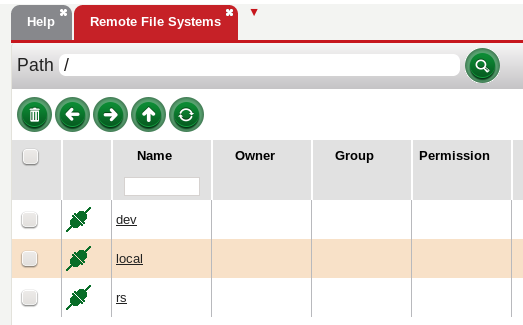

The remote file system tab enables connections to servers local file systems through SFTP (SSH File Transfer Protocol). It provides a simple way to display and transfer files to/from HDFS.
To create a new connection, create a new host Software>Settings>remotefs>Host>
Once the connection has been established, the tab should now display a list of items in the remote server. To copy an item, drag it and drop it to the Hadoop File System